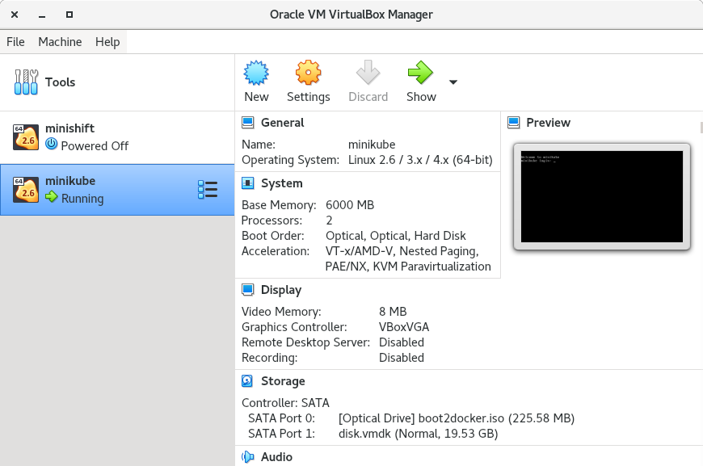
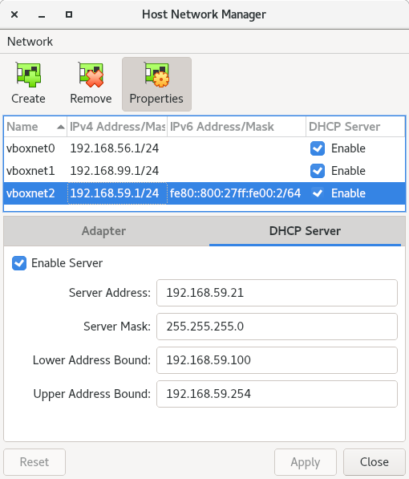

[user@host kbe]$ minikube config set driver virtualbox
❗ These changes will take effect upon a minikube delete and then a minikube startGuided Exercise: Installing Metallb on a Minikube Cluster
In this exercise, you will deploy the MetalLB add-on on a minikube cluster.
Outcomes
You should be able to:
-
Create a minikube instance.
-
Get the DHCP network parameters of the minikube VM driver.
-
Enable and configure the MetalLB minikube add-on.
-
Create an example deployment and LoadBalancer service.
-
Access the service with the external IP address provided by MetalLB.
To perform this exercise, ensure that you have:
-
The
kubectl, andminikubeexecutables version 1.22 or higher on a directory listed in${PATH}. -
VirtualBox version 6.1 or higher.
-
The current user is in the
vboxuserssystem group.
MetalLB is distributed as a minikube add-on.
You can also consult the upstream project installation guide
Procedure instructions
1) Create a minikube instance.
1.1) Set the virtualbox driver as default for minikube.
1.2) Create a minikube instance.
[user@host kbe]$ minikube start
😄 minikube v1.22.0 on RedHat 8.5
✨ Using the virtualbox driver based on user configuration
👍 Starting control plane node minikube in cluster minikube
🔥 Creating virtualbox VM (CPUs=2, Memory=6000MB, Disk=20000MB) ...
🐳 Preparing Kubernetes v1.22.3 on Docker 20.10.8 ...
▪ Generating certificates and keys ...
▪ Booting up control plane ...
▪ Configuring RBAC rules ...
🔎 Verifying Kubernetes components...
▪ Using image gcr.io/k8s-minikube/storage-provisioner:v5
🌟 Enabled addons: storage-provisioner, default-storageclass
🏄 Done! kubectl is now configured to use "minikube" cluster and "default" namespace by default1.3) Wait until all pods in the cluster are ready.
[user@host kbe]$ kubectl get pods -n kube-system
NAME READY STATUS RESTARTS AGE
coredns-78fcd69978-mvjqv 1/1 Running 0 5m24s
etcd-minikube 1/1 Running 0 5m36s
kube-apiserver-minikube 1/1 Running 0 5m36s
kube-controller-manager-minikube 1/1 Running 0 5m36s
kube-proxy-kl6tc 1/1 Running 0 5m24s
kube-scheduler-minikube 1/1 Running 0 5m36s
storage-provisioner 1/1 Running 0 5m36s|
Note
|
You might need to repeat the command until the desired condition is reached. |
2) Get the IP address range for the DHCP server.
2.1) Check the driver on which the minikube VM is created. This guided exercise assumes that the VM driver is provided by VirtualBox.
[user@host kbe]$ minikube profile list
|----------|------------|---------|----------------|------|---------|---------|-------|
| Profile | VM Driver | Runtime | IP | Port | Version | Status | Nodes |
|----------|------------|---------|----------------|------|---------|---------|-------|
| minikube | virtualbox | docker | 192.168.59.118 | 8443 | v1.22.3 | Running | 1 |
|----------|------------|---------|----------------|------|---------|---------|-------||
Warning
|
The instructions on this step will be different if another VM driver is used. |
2.2) Open the VirtualBox console, and select the minikube VM.
| VirtualBox console |
|---|

|
2.3) Scroll down on the right panel, and check the configuration parameters of the second network adapter to see on which host-only adapter the VM is connected to.
Take note of the host-only vboxnet adapter that the VM is connected to.
minikube VM network parameters |
|---|

|
2.4) Open the File menu and click Host Network Manager.
| VirtualBox Host Network Manager |
|---|

|
2.5) On the Host Network Manager window, click the properties button, select the appropriate vboxnet adapter and click on the DHCP Server tab.
Take note of the lower and upper address bounds.
| VirtualBox host-only adapter DHCP settings |
|---|

|
3) Enable the MetalLB minikube add-on.
3.1) Check if metallb is listed on the available add-ons for minikube.
[user@host kbe]$ minikube addons list
|--------------------------|----------|------------|-----------------------|
| ADDON NAME | PROFILE | STATUS | MAINTAINER |
|--------------------------|----------|------------|-----------------------|
| ambassador | minikube | disabled | unknown (third-party) |
| auto-pause | minikube | disabled | google |
| csi-hostpath-driver | minikube | disabled | kubernetes |
| dashboard | minikube | disabled | kubernetes |
| default-storageclass | minikube | enabled ✅ | kubernetes |
| efk | minikube | disabled | unknown (third-party) |
| freshpod | minikube | disabled | google |
| gcp-auth | minikube | disabled | google |
| gvisor | minikube | disabled | google |
| helm-tiller | minikube | disabled | unknown (third-party) |
| ingress | minikube | disabled | unknown (third-party) |
| ingress-dns | minikube | disabled | unknown (third-party) |
| istio | minikube | disabled | unknown (third-party) |
| istio-provisioner | minikube | disabled | unknown (third-party) |
| kubevirt | minikube | disabled | unknown (third-party) |
| logviewer | minikube | disabled | google |
| metallb | minikube | disabled | unknown (third-party) |
| metrics-server | minikube | disabled | kubernetes |
| nvidia-driver-installer | minikube | disabled | google |
| nvidia-gpu-device-plugin | minikube | disabled | unknown (third-party) |
| olm | minikube | disabled | unknown (third-party) |
| pod-security-policy | minikube | disabled | unknown (third-party) |
| portainer | minikube | disabled | portainer.io |
| registry | minikube | disabled | google |
| registry-aliases | minikube | disabled | unknown (third-party) |
| registry-creds | minikube | disabled | unknown (third-party) |
| storage-provisioner | minikube | enabled ✅ | kubernetes |
| volumesnapshots | minikube | disabled | kubernetes |
|--------------------------|----------|------------|-----------------------|
💡 To see addons list for other profiles use: `minikube addons -p name list`3.2) Enable the MetalLB minikube add-on.
[user@host kbe]$ minikube addons enable metallb
▪ Using image metallb/controller:v0.9.6
▪ Using image metallb/speaker:v0.9.6
🌟 The 'metallb' addon is enabled3.3) Configure the IP addresses that can be used by MetalLB for the LoadBalancer services.
[user@host kbe]$ minikube addons configure metallb
-- Enter Load Balancer Start IP: 192.168.59.20
-- Enter Load Balancer End IP: 192.168.59.30
▪ Using image metallb/speaker:v0.9.6
▪ Using image metallb/controller:v0.9.6
✅ metallb was successfully configured|
Note
|
The load balancer IP address range for MetalLB must not overlap with the DHCP IP address range. |
3.4) Review the applied settings
[user@host kbe]$ kubectl get configmap/config -n metallb-system -o yaml
apiVersion: v1
data:
config: |
address-pools:
- name: default
protocol: layer2
addresses:
- 192.168.59.20-192.168.59.30
kind: ConfigMap
...output omitted...4) Deploy an example application.
4.1) Create a deployment with a sample application.
[user@host kbe]$ kubectl create deployment nginx \
--image quay.io/redhattraining/nginx:1.21 --port 80
deployment.apps/nginx created4.2) Check that the deployment and pod are ready.
[user@host kbe]$ kubectl get deployments,pods -l app=nginx
NAME READY UP-TO-DATE AVAILABLE AGE
deployment.apps/nginx 1/1 1 1 50s
NAME READY STATUS RESTARTS AGE
pod/nginx-f66b485df-7krfh 1/1 Running 0 50s4.3) Expose the deployment to create a load balancer service.
[user@host kbe]$ kubectl expose deployment nginx \
--type LoadBalancer --port 80 --target-port 80
service/nginx exposed4.4) Get the external IP address for the load balancer service.
[user@host kbe]$ kubectl get services -l app=nginx
NAME TYPE CLUSTER-IP EXTERNAL-IP PORT(S) AGE
nginx LoadBalancer 10.105.39.72 192.168.59.20 80:31304/TCP 45s|
Note
|
If the external IP address shows a |
5) Access the example application.
5.1) Check that the service responds with curl.
[user@host kbe]$ curl -vk#L 'http://192.168.59.20/' | \
grep -o "<title>.*</title>"
* Trying 192.168.59.20...
* TCP_NODELAY set
* Connected to 192.168.59.20 (192.168.59.20) port 80 (#0)
> GET / HTTP/1.1
> Host: 192.168.59.20
> User-Agent: curl/7.61.1
> Accept: */*
>
< HTTP/1.1 200 OK
< Server: nginx/1.21.6
< Date: Sat, 29 Jan 2022 06:11:46 GMT
< Content-Type: text/html
< Content-Length: 615
< Last-Modified: Tue, 25 Jan 2022 15:03:52 GMT
< Connection: keep-alive
< ETag: "61f01158-267"
< Accept-Ranges: bytes
<
{ [615 bytes data]
######################################################################### 100.0%
* Connection #0 to host 192.168.59.20 left intact
<title>Welcome to nginx!</title>5.2) Visit the service URL with a web browser to see the page.
-
http://192.168.59.20/
| Web page from the LoadBalancer service |
|---|

|
5.3) List all the resources with the app=nginx label.
[user@host kbe]$ kubectl get all -l app=nginx
NAME READY STATUS RESTARTS AGE
pod/nginx-f66b485df-7krfh 1/1 Running 0 2m10s
NAME TYPE CLUSTER-IP EXTERNAL-IP PORT(S) AGE
service/nginx LoadBalancer 10.105.39.72 192.168.59.20 80:31304/TCP 105s
NAME READY UP-TO-DATE AVAILABLE AGE
deployment.apps/nginx 1/1 1 1 2m10s
NAME DESIRED CURRENT READY AGE
replicaset.apps/nginx-f66b485df 1 1 1 2m10s6) Cleanup
6.1) Remove the resources created.
[user@host kbe]$ kubectl delete service nginx
service "nginx" deleted
[user@host kbe]$ kubectl delete deployment nginx
deployment.apps "nginx" deleted|
Note
|
You can optionally delete all the resources with the |
6.2) Verify that all the resources with the app=nginx label are deleted.
[user@host kbe]$ kubectl get all -l app=nginx
No resources found in default namespace.This concludes the guided exercise.
|
Note
|
The MetalLB installation is required for other guided exercises. |